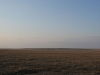
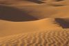
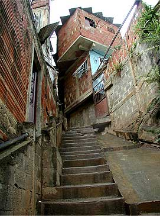

Tibi
 De: La Frikipedia, la enciclopedia extremadamente seria.
De: La Frikipedia, la enciclopedia extremadamente seria.
| De la serie Países del planeta tierra:
|
| Estado Independiente Universal de Tibi
|
 ¿Quién se atreve a decir que es fea sabiendo de dónde es? |
 El escudo representa cómo queda todo al paso de los tibienses |
| (Bandera)
|
(Escudo de armas)
|
|
| Lema: Hazada, Chikilicuatre y a conquistar¡¡¡
|
Himno: El pastorero
|
 Imagen típica de Tibi
|
| Capital
|
Tibi
|
| Mayor ciudad
|
Ciudad subterránea de Tibi (por descubrir)
|
| Lenguas oficiales
|
Tibiense
|
| Gobierno
|
Democracia chikilicuatrista
|
| {{{título_líder}}}
|
Rodolfo Chikilicuatre
|
| Área
|
de 1m2 a todo el mundo, aprox.
|
| Población
|
de 20 a 6.000.000.000 más o menos
|
| Moneda
|
roca caliza o un cerdo, según lo que se comercie
|
| Zona horaria
|
la misma que nosotros, hasta que nos conquisten
|
| Dominio Internet
|
todos los sitios web los controlan ellos
|
| Código telefónico
|
ellos no tienen teléfono. Usan el grito tibiense
|
| Es imposible conquistarlo ni frenar sus planes de conquista
|
«El 98% de las riquezas de Tibi procederán de sobornos para mantener la paz. El resto será de la economía local»
~ Artículo sobre la economía tibiense Constitución de Tibi
Tibi es una potencia de infinita influencia en todo el mundo desde mucho antes de su creación, más o menos a la vez que Andorra. Su principal objetivo es la expansión de sus fronteras, que se les quedan pequeñas para tantos avances que desarrollan continuamente. Sabe que en el momento en el que levante sus fronteras será cuestión de minutos que el gobierno de Espiña quiera reunirse con el Alcalde-Presidente de Tibi.
Razón de su desarrollo
Realmente, nadie ajeno a ellos tiene acceso a tal información. La última persona que se atrevió a intentar investigar sobre Tibi desapareció y nadie más ha vuelto a saber nada más de él. Hay leyendas que cuentan que esa persona descubrió cómo es Tibi en realidad y decidió quedarse a vivir allí. Sin embargo, otros opinan que le pillaron y utilizaron una potente arma para hacerlo desaparecer sin más.
Lo único que se cree saber de Tibi es que no tiene reservas petrolíferas ni de gas, ni minas de ningún mineral preciado, ni fábricas de tangas que no duelan, ni un imitador de Chiquito de la Calzada, ni una Escuela de Croquetas, ni jamón serrano, ni televisión. Así pues, oficialmente, Tibi, como Estado Independiente, tendría que haberse ido a la mierda hace, al menos, cien años. Pero no hay más que intentar acercarse a la verdad de Tibi para darse cuenta de que son muy potentes.
Avances tibienses
Es de lo único que se tiene conocimiento más o menos seguro. Tienen armas más avanzadas que ningún otro país poderoso, como Andorra, que es una fiel aliada suya. Como nadie ha estado allí nunca, no se puede corroborar ese hecho. Espiña intenta controlar todos los movimientos a través de la frontera de Tibi, pero todavía no han visto nada. Lo más interesante que ocurre allí es el paso diario de un autobús interurbano que intenta no ser descubierto por ningún ciudadano de aquel país. Por lo tanto, y teniendo en cuenta que tampoco se ve rastro de una fábrica de armamento, los tibienses no pueden atacar con armas, sino con tomates y hortalizas, que es lo único que se ve mediante imágenes por satélite. Pero aun así, no hay huevos valor para atacarles.
Ningún ejército puede luchar contra Tibi
Tampoco se les puede interceptar ninguna llamada, pues usan el grito en tibiense, ininteligible para el resto de mortales.
Planes de conquista
Obviamente, un Estado tan fuerte como es Tibi quiere hacerse con el control del mundo. Su plan es muy sencillo:
- Primero, sacará todo su armamento desde el polvorín gigante que tiene bajo tierra para ponerlo a punto.
- Después, abrirá sus fronteras con Ibi. Como el objetivo tibiense no es hacer sufrir a la gente en sus batallas, tomarán la ciudad en dos minutos, por la madrugada, para que no se les vea la cara (hay quien que dice verlos acojona).
- Como no sé podrá avisar a nadie de la incursión porque no les habrá dado tiempo de avisar, el ejército tibiense podrá dirigirse a Alcoy y a Alicante sin encontrar más resistencia que la de los que vieron Armageedon y algún que otro Emo a punto de palmarla.
- Cuando hayan tomado Alicante, avisarán al imperio de Tabarca para que inicie la expansión por toda la costa mediterránea de Espiña en un plazo máximo de una hora, utilizando sus sofisticados submarinos a pilas.
- A continuación, centrarán sus fuerzas en conquistar "Catamarruc City", ciudad de vacaciones sabiendo que el innumerable ejército de Balones les estará esperando. Los tibienses, al igual que el resto del mundo, saben que Balones es un bastión muy resistente, muy poderoso, y que las azadas de sus habitantes están rellenas de gases altamente tóxicos. Será una maniobra arriesgada que, sin duda, ganará Tibi.
- Con Balones a sus pies, esa misma tarde el ejército tibiense se dividirá en dos: una parte irá a Andalucia para coger buenos jamones y gazpacho andaluz para el gobernador de Tibi. De paso, conquistarán toda Andalucía. La otra parte del ejército pondrá rumbo a Castilla la Mancha para acabar tomando Madrid, con el conocimiento de que el ejército que les espera utilizará un arma muy potente: el cocido madrileño, altamente calórico. Pero Tibi tiene un ejército invencible que ni huele ni siente hambre ni dolor. Así pues, Madrid caerá en veinte segundos, según lo previsto.
- Llegados a este punto, Tibi se pondrá en contacto por línea de alta seguridad (a base de gritos de pastor, sistema infalible) con Andorra y así tomar la costa del norte de España.
- Como Portugal se habrá enterado ya del avance tibiense, se habrá autodestruído, facilitándoles la tarea a los de Tibi.
- El resto del mundo será conquistado de esta manera:
- Tabarca, que ya habrá hecho bastante tiempo desde que haya conquistado todo el Mediterráneo, hará lo propio con toda África.
- Andorra, que también habrá hecho lo suyo, irá a por toda Europa, que es pan comido para el gigante de los Pirineos.
- En cuanto a América, bastará en el caso de América latina con quitarles los actores de sus
patéticas buenas telenovelas para que se autodestruyan. Con América del Norte habrá que quitarles el Burger King y el McDonalds además de ponerles más dosis de televisión pública y menos de la Fox. Así, también se autodestruirán.
- Asia caerá en cuanto les llevemos patatas bravas de la Mancha. No podrán resistir su sabor picante.
- Oceanía, que está por donde Jesús perdió la zapatilla, cogerán un cohete y se dirigirán hacia el mundo de Willie Fog para salvarse.
Cuando todo esto haya ocurrido, el gran líder-gobernador-alcalde-semiDios-amigo de Chuck Norris-seguidor fiel de El Fary emitirá un discurso en tibiense, agradeciendo a sus soldados la labor y lo bueno que estaba el jamón después del gazpacho.
Qué hacer cuando lleguen a tu ciudad los tibienses
- Puedes llorar. No conseguirás que no conquisten la ciudad, pero por lo menos no estarás viendo como lo conquistan todo a lo bestia.
- Puedes rezar sin parar. No conseguirás ni que no conquisten la ciudad ni que Dios te haga caso, porque ¿te crees que Dios prefiere escucharte a ti antes que ver alguna tía buena duchándose en el resto del mundo?
- Puedes trabajar o hacer los deberes de clase. Así, tampoco lograrás nada de lo anterior, pero estarás entretenido.
- Puedes jugar a la play. Así, tu último recuerdo antes de ser tibiense será el de haber estado viciándote un poco, lo cual no está nada mal.
- Puedes ver un vídeo del Chiki Chiki en eurovisión. Es una idea sensata, teniendo en cuenta que Chikilicuatre es el líder de los tibienses. Así, te acostumbras a su cara.
- Puedes estar haciendo tus cositas en el baño. Total, tú decides qué hacer con tu tiempo, aunque estés a punto de asistir a un cambio de gobierno, económico, social, cultural, geográfico, literario, ideológico, sexual.
- Puedes dedicarte a correr como un loco. Obviamente, no te salvarás de las garras tibienses, pero harás ejercicio, que es bueno para la salud.
- Puedes ver tonterías en la tele. Así podrás contrastar la penosa programación televisiva ahora y después de que Tibi domine la señal.
- Puedes jugar al parchís. Es bastante estúpido porque a los tibienses les encantan los juegos de mesa, por lo que podrás seguir jugando como hasta ahora.
- Puedes dormir. Así, tendrás más fuerzas para lo que pueda venir.
- Puedes hacer un cursillo intensivo de diez segundos sobre cómo crear tu propia nave espacial a partir de las sobras de la comida. Es muy probable que así te contraten los servicios secretos tibienses, que pagan bien.
- Puedes aprender con cursillos intensivos a labrar la tierra. Es muy útil también para Tibi.
- Puedes estar emparrao. Así, igual que si lloras, tampoco estarás viendo la conquista, que puede llegar a ser entretenida.
- Puedes cortarte las venas. Eso significa que eres un Emo, así que ya puedes ir dejándote el vicio.
- Puedes estar leyendo esto. A los de Tibi no les importará, pero al menos le darás un cierto sentido al tiempo que estoy invirtiendo en escribirlo.
- Puedes teletransportarte. En ese caso, vende la exclusiva a algún ricachón y fórrate. Pero tienes que disfrutar enseguida de tu dinero, antes de que lleguen los de Tibi y se lo lleven para comprar una cooperativa más grande.
Autor(es):
- Fordus
- Veni Vidi Vici
- Dark temptation
- Musico
- Ricardoxxxlo
- Wolfen98
- Uli Sat
Frikipedia 2005-2016, Licencia
GFDL 1.2 - Extraído por FrikiLeaks